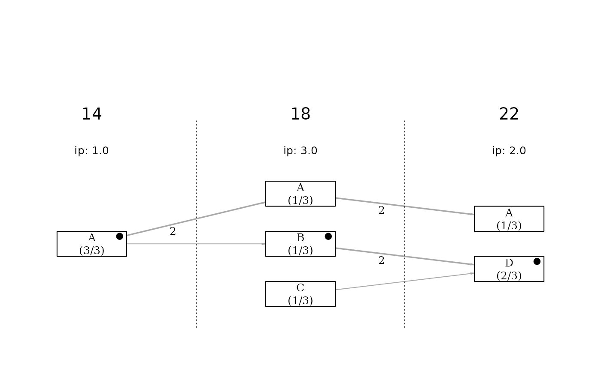

A variant of sample_data containing binary values (0/1) instead of
TRUE/FALSE values. This is useful for testing functions that must correctly
interpret both logical and numeric binary formats.
Format
A data frame with 18 rows and 5 variables (same structure as sample_data).
Examples
# Basic inspection
str(sample_binary_values)
#> tibble [18 × 5] (S3: tbl_df/tbl/data.frame)
#> $ elections: num [1:18] 14 14 14 18 18 18 18 18 18 18 ...
#> $ candidate: chr [1:18] "c01" "c02" "c03" "c01" ...
#> $ list_name: chr [1:18] "A" "A" "A" "A" ...
#> $ elected : num [1:18] 1 1 1 1 0 1 0 0 0 1 ...
#> $ mayor : num [1:18] 1 0 0 0 0 1 0 0 0 0 ...
# Quick continuity diagram (basic and unformatted version)
plot_continuity(sample_binary_values)
